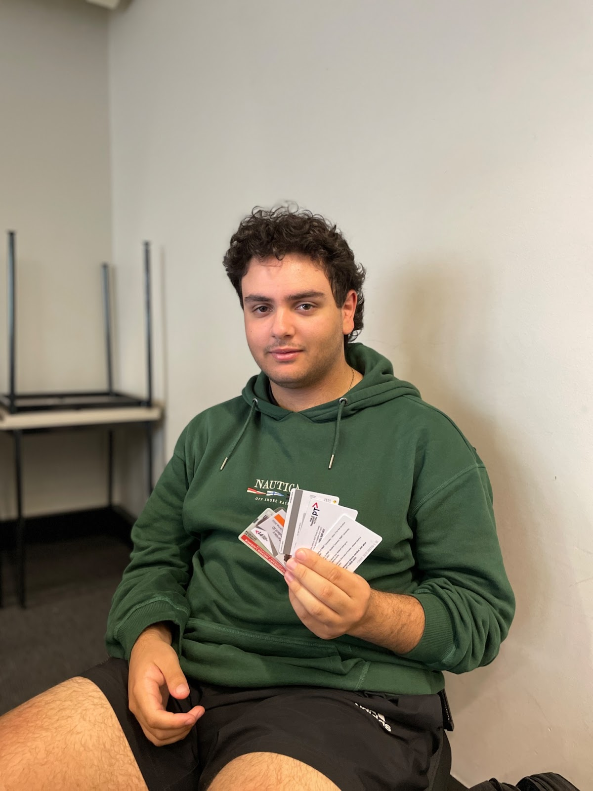

James Thomson
My name is James Thomson. I was born in February of 2003 in Edinburgh, Scotland while on a business trip with my family as my father studied medicine. My family comes from a highly mixed nationality; however, we primarily consist of Europeans. My education began in Kindergarten at glass street Kinder. Secondly, the primary school I attended from grade 1-4 was Kew East Primary; and lastly, my leading education was at Trinity Grammar School from grade 5-12. In VCE, I studied Physics, Methods, Chemistry, English and Software Development. I do not speak any languages apart from my native language English.
Primarily I am a big gamer spending all of my spare time playing (I'm addicted). Because of my immense enjoyment from playing, I have built a hobby around it and a hobby of making and building PCs for people in addition to programming and Servers. My main interest in IT began when I was young. I always enjoyed being near computers and electronics; I don't know why I have such enjoyment of these things, but it always gave me happiness. I believe it's because of how much I game on these devices. I've had a long experience with computers, servers, electronics, and hardware devices. I've built many PC's in my life and built servers for hosting windows users and/or gaming servers. I've made robots and programs for hardware and software simply because of the enjoyment of seeing a finished product.
Louisa Carbone
“Ciao” or Hello, my name is Louisa Carbone and I’m of Italian Italian descent, with both my parents being from Calabria. I have one older and one younger brother, the older one being 21 this year (and also attends RMIT) and the younger one being 5 years old. I was born in Melbourne, Australia. I am 18 years old, born on the 23rd of October 2003 and I graduated and completed my VCE last year from Siena College in Camberwell.
My interests include; writing; singing and producing songs; listening to music; playing video games; and collecting clothing; encompassing both sustainable clothing, deadstock shoes and op-shop finds.).
My interest in IT really sparked when I received my first computer, a HP Pavilion DV6. It was definitely not a state-of-the-art laptop, but it did the job. Soon after, I was introduced to the world of Minecraft by my older cousin, and together we ventured through many web-based games. I never got into console gaming, because my parents were not (and are still are not) fans of us playing video games. Therefore, my brother and I spent most of our time at our family friend’s place. There I was slightly introduced to the world of the PSP, The DSI, Call of Duty: Modern Warfare 3 and many other games. However, being the younger sister, I was strictly the observer and cannot say I have any particular skill playing any of these games.
Marcus Florio

My name is Marcus Florio, I am 19 years old and I was born on the 24th of March 2003 in Melbourne, Victoria. My family consists of my mum Francine, my dad Mario, my sister Tahlia and myself. We are of Italian background, with both sets of my grandparents immigrating from Italy during the 50's - 60's (my dad's side came from small towns in Campagna, My mum's from Delianuova in Calabria). In terms of schooling, I attended St. Anne's in Park Orchards from 2009 - 2015. After graduating, I then attended Whitefriars College in Donvale, Victoria, from 2016 - 2021. Here I had the opportunity of being a part of the leadership team, representing the faculty of Humanities, and subsequently undergoing a leadership program. I'm particularly interested in things such as sports, music, and video games, with the latter being the original spark of interest in this field. Since a young age, I’ve always loved playing video games, with my dad and my older cousin owning a combined array of consoles, such as the PlayStation 1, 2, 3 and an Xbox 360, which I would readily use throughout my childhood.
Lachlan Colville
Hey, I’m Lachie. I’m a first year IT student at RMIT and a part of the group ‘RDC’ for assignment 2. Some of my biggest hobbies and interests are reading novels, watching anime, as well as gaming, which stemmed my initial interest in IT. Some of my favourite pieces of media in these groups include the novel ‘Norwegian Wood’ by Haruki Murakami, the anime/manga JoJo’s Bizarre Adventure by Hirohiko Araki, and the game ‘The Last of Us’ made by the developer Naughty dog. Originally, I wanted to be a games developer; however, after looking into getting into the industry I realised that it was extremely difficult to break into. Thus, I eventually chose to look at the general IT field for my future career. I don’t have a heap of experience working in IT, barring a few classes in junior high school covering only the most basic HTML and Python, but I’m looking forward to learning a wide variety of skills throughout my course at RMIT.
Muhammad Imran
My name is Muhammad Talha Imran. My friends and family call me Moey. I am currently studying Bachelors of I.T at RMIT. I am studying I.T because I have always been interested in working on projects and making different programs. I have a little experience with website development and a fair bit of knowledge in coding. I have made several Apps in C#, which helped me learn the language a lot more and I can now comfortably program in C#. Other than coding, my main hobby Is working on my car. If I am not at university or working on my car, I am usually either working or at the gym. I work in the security industry, and it is amazing. In my spare time, I like to play games, mainly Forza Horizon. Overall, I am happy to be at RMIT and in the future looking forward to working in Cyber Security.